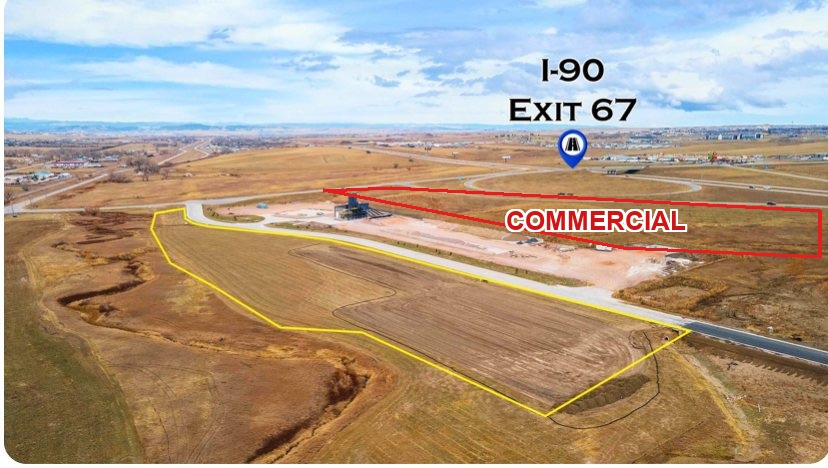
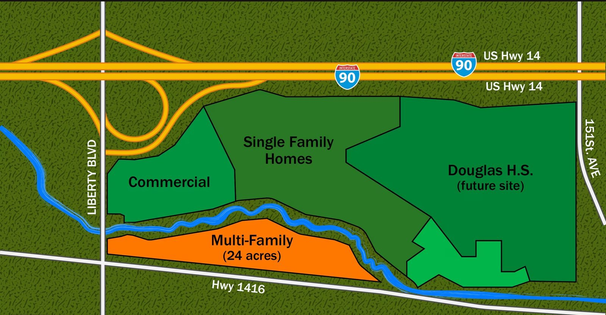

<!-- TEMPLATE: cinematic vision reel (saved from pages/gas-station/vision.html)
     To reuse for a new property: copy this file, swap the three image srcs
     (currently pointing at ../gas-station/assets/), update title/description,
     the phase captions + numbers in the PHASES array, and the CTA copy.
     Keep it a single self-contained file — no CDNs or network requests. -->
<title>Freedom Estates — I-90 Exit 67 Commercial Tract</title>
<meta name="viewport" content="width=device-width, initial-scale=1, viewport-fit=cover">
<meta name="description" content="7.30-acre shovel-ready commercial tract at I-90 Exit 67, Box Elder SD. A cinematic look at a travel center thriving on this corner.">

<style>
  /* ============================================================
     FREEDOM ESTATES — cinematic construction transition
     Single self-contained page. Only the three ./assets/*.jpg
     files are external. No libraries, no network requests.
     ============================================================ */

  :root{
    /* Brand — prairie green / bone / brass */
    --green-900:#182f22;
    --green-800:#234634;
    --green-700:#2f5d43;
    --bone:#f6f1e7;
    --bone-dim:#e7e0d0;
    --brass:#b08637;
    --wheat:#d9b869;
    --ink:#12211a;

    /* Dusk (money-shot) values */
    --dusk-sky:#14243f;
    --dusk-amber:#e0913c;

    --serif: "Iowan Old Style","Palatino Linotype","Palatino","Book Antiqua",Georgia,"Times New Roman",serif;
    --sans: ui-sans-serif,system-ui,-apple-system,"Segoe UI",Roboto,"Helvetica Neue",Arial,sans-serif;
    --mono: ui-monospace,"SF Mono","Menlo","Consolas",monospace;

    --maxw: 1100px;
  }

  *{box-sizing:border-box}
  html,body{margin:0;padding:0}
  html{ -webkit-text-size-adjust:100%; }
  body{
    background:var(--green-900);
    color:var(--bone);
    font-family:var(--sans);
    line-height:1.5;
    overflow-x:hidden;                 /* never scroll sideways */
    -webkit-font-smoothing:antialiased;
    text-rendering:optimizeLegibility;
  }
  img{max-width:100%;display:block}
  a{color:inherit}

  /* ---------- The cinematic stage ---------- */
  .stage{
    position:relative;
    width:100%;
    height:100svh;
    min-height:560px;
    overflow:hidden;
    background:linear-gradient(#0d1c14,#16301f);
    isolation:isolate;
  }

  /* Ken Burns "before" aerial photo */
  .aerial{
    position:absolute; inset:0;
    width:100%; height:100%;
    object-fit:cover;
    object-position:center 40%;
    z-index:1;
    will-change:transform,opacity;
    transform:scale(1.04);
  }
  .aerial.kb{ animation:kenburns 9s ease-out both; }
  @keyframes kenburns{
    from{transform:scale(1.02) translate3d(0,0,0)}
    to{transform:scale(1.16) translate3d(-1.5%,-2%,0)}
  }
  /* graceful fallback if the photo 404s */
  .aerial.broken{ background:linear-gradient(#8fb0c9 0%,#cfd9c6 55%,#b9c39a 100%); }
  .aerial.broken::after{ content:""; }

  /* The drawn scene */
  #scene{
    position:absolute; inset:0;
    width:100%; height:100%;
    z-index:2;
    display:block;
  }

  /* thin brass vignette / frame for a "premium" feel */
  .stage::after{
    content:"";
    position:absolute; inset:0;
    pointer-events:none;
    z-index:6;
    box-shadow:inset 0 0 140px rgba(0,0,0,.55), inset 0 0 0 1px rgba(217,184,105,.10);
    background:
      radial-gradient(120% 80% at 50% 8%, transparent 55%, rgba(0,0,0,.28) 100%);
  }

  /* ---------- Caption overlay ---------- */
  .caption{
    position:absolute;
    left:0; right:0;
    top:max(env(safe-area-inset-top), 22px);
    padding:0 22px;
    z-index:7;
    pointer-events:none;
    text-align:center;
  }
  .eyebrow{
    font-family:var(--sans);
    font-size:12px;
    letter-spacing:.28em;
    text-transform:uppercase;
    color:var(--wheat);
    margin:0 0 10px;
    text-shadow:0 1px 8px rgba(0,0,0,.6);
    opacity:.92;
  }
  .cap-line{
    position:relative;
    min-height:2.6em;
  }
  .cap{
    position:absolute; left:0; right:0; top:0;
    margin:0 auto;
    max-width:16ch;
    font-family:var(--serif);
    font-weight:600;
    font-size:clamp(24px,6.4vw,44px);
    line-height:1.12;
    color:var(--bone);
    text-shadow:0 2px 20px rgba(0,0,0,.7);
    opacity:0;
    transform:translateY(8px);
    transition:opacity .7s ease, transform .7s ease;
  }
  .cap.on{ opacity:1; transform:none; }
  .cap .sub{
    display:block;
    margin-top:10px;
    font-family:var(--sans);
    font-weight:500;
    font-size:clamp(13px,3.4vw,17px);
    letter-spacing:.01em;
    color:var(--bone-dim);
    max-width:30ch;
    margin-inline:auto;
  }

  /* Traffic count tag pinned near the "highway" */
  .traffic-tag{
    position:absolute;
    z-index:7;
    top:38%;
    left:50%;
    transform:translate(-50%,-50%);
    font-family:var(--mono);
    font-size:12px;
    letter-spacing:.06em;
    color:var(--bone);
    background:rgba(18,33,26,.55);
    border:1px solid rgba(217,184,105,.35);
    backdrop-filter:blur(3px);
    padding:5px 10px;
    border-radius:999px;
    white-space:nowrap;
    opacity:0;
    transition:opacity .8s ease;
    pointer-events:none;
  }
  .traffic-tag b{color:var(--wheat);font-weight:700}
  .traffic-tag.on{opacity:1}

  /* ---------- Controls ---------- */
  .controls{
    position:absolute;
    left:0; right:0;
    bottom:max(env(safe-area-inset-bottom), 18px);
    z-index:8;
    display:flex;
    flex-direction:column;
    align-items:center;
    gap:14px;
    padding:0 16px;
  }
  .dots{ display:flex; gap:12px; align-items:center; }
  .dot{
    appearance:none;
    -webkit-appearance:none;
    border:0; background:transparent;
    padding:12px 6px;               /* ≥44px tap target incl. label row */
    cursor:pointer;
    display:flex; flex-direction:column; align-items:center; gap:7px;
  }
  .dot i{
    display:block; width:9px; height:9px; border-radius:50%;
    background:rgba(246,241,231,.30);
    box-shadow:0 0 0 1px rgba(0,0,0,.25);
    transition:background .3s, transform .3s, box-shadow .3s;
  }
  .dot span{
    font-size:9.5px; letter-spacing:.14em; text-transform:uppercase;
    color:rgba(246,241,231,.45); font-family:var(--sans);
    transition:color .3s;
  }
  .dot[aria-current="true"] i{ background:var(--wheat); transform:scale(1.35); box-shadow:0 0 12px rgba(217,184,105,.7); }
  .dot[aria-current="true"] span{ color:var(--wheat); }
  .dot:hover i{ background:var(--bone); }

  .btn-row{ display:flex; gap:10px; flex-wrap:wrap; justify-content:center; }
  .btn{
    appearance:none; -webkit-appearance:none;
    font-family:var(--sans);
    font-size:13px; font-weight:600; letter-spacing:.03em;
    min-height:44px;
    padding:0 18px;
    border-radius:999px;
    cursor:pointer;
    display:inline-flex; align-items:center; gap:8px;
    border:1px solid rgba(217,184,105,.45);
    background:rgba(18,33,26,.5);
    color:var(--bone);
    backdrop-filter:blur(4px);
    transition:background .2s, border-color .2s, transform .1s;
  }
  .btn:hover{ background:rgba(35,70,52,.7); border-color:var(--wheat); }
  .btn:active{ transform:translateY(1px); }
  .btn.primary{
    background:linear-gradient(180deg,var(--wheat),var(--brass));
    color:#241804; border-color:transparent;
    box-shadow:0 6px 22px rgba(176,134,55,.35);
  }
  .btn.primary:hover{ filter:brightness(1.05); }

  /* strong, consistent focus ring for keyboard users */
  .dot:focus-visible,.btn:focus-visible,a:focus-visible{
    outline:3px solid var(--wheat);
    outline-offset:3px;
    border-radius:12px;
  }

  /* ---------- Phase 5 : THE ASK (overlay in stage) ---------- */
  .cta{
    position:absolute; inset:0;
    z-index:7;
    display:flex; flex-direction:column; justify-content:center;
    align-items:center;
    text-align:center;
    padding:clamp(20px,5vw,48px);
    gap:clamp(14px,3vw,22px);
    background:
      linear-gradient(180deg, rgba(10,18,32,.72) 0%, rgba(10,16,26,.86) 100%);
    opacity:0; visibility:hidden;
    transition:opacity .9s ease, visibility .9s;
    overflow-y:auto;
  }
  .cta.on{ opacity:1; visibility:visible; }
  /* Never let a child exceed the viewport (align-items:center sizes to max-content) */
  .cta > *{ max-width:100%; }
  .cta .kicker{
    font-size:12px; letter-spacing:.28em; text-transform:uppercase;
    color:var(--wheat);
  }
  .cta h2{
    font-family:var(--serif); font-weight:600;
    font-size:clamp(24px,6.2vw,50px);
    line-height:1.08; margin:0;
    max-width:min(16ch, 100%);
    overflow-wrap:break-word;
  }
  .numbers{
    display:flex; flex-wrap:wrap; gap:clamp(14px,4vw,40px);
    justify-content:center; align-items:flex-end;
    margin:2px 0 2px;
  }
  .num{ display:flex; flex-direction:column; align-items:center; }
  .num b{
    font-family:var(--mono);
    font-variant-numeric:tabular-nums;
    font-size:clamp(24px,7vw,40px);
    font-weight:700;
    color:var(--wheat);
    line-height:1;
  }
  .num small{
    font-size:11px; letter-spacing:.16em; text-transform:uppercase;
    color:var(--bone-dim); margin-top:8px;
  }
  .facts{
    display:flex; flex-wrap:wrap; gap:8px 10px; justify-content:center;
    max-width:min(640px, 100%);
  }
  .facts .chip{ max-width:100%; }
  .facts .chip{
    font-size:12.5px; letter-spacing:.01em;
    padding:6px 12px; border-radius:999px;
    background:rgba(246,241,231,.08);
    border:1px solid rgba(246,241,231,.16);
    color:var(--bone);
  }
  .facts .chip b{ color:var(--wheat); font-weight:700; }

  .agent{
    margin-top:6px;
    display:flex; flex-direction:column; align-items:center; gap:4px;
  }
  .agent .name{ font-family:var(--serif); font-size:clamp(18px,4.5vw,22px); }
  .agent .org{ font-size:13px; color:var(--bone-dim); letter-spacing:.02em; }
  .agent .links{ display:flex; gap:10px; margin-top:10px; flex-wrap:wrap; justify-content:center; }

  /* ---------- Closing section (always present, scrollable, print-safe) ---------- */
  .closing{
    background:
      radial-gradient(120% 90% at 50% -10%, #1c3928 0%, var(--green-900) 60%);
    padding:clamp(40px,8vw,80px) 20px clamp(56px,10vw,90px);
  }
  .wrap{ max-width:var(--maxw); margin:0 auto; }
  .closing .lede{
    text-align:center; margin:0 auto clamp(24px,5vw,40px);
    max-width:60ch;
  }
  .closing .lede .eyebrow{ margin-bottom:14px; }
  .closing h3{
    font-family:var(--serif); font-weight:600;
    font-size:clamp(24px,5.5vw,38px); margin:0 0 12px;
  }
  .closing .lede p{ color:var(--bone-dim); font-size:clamp(15px,2.4vw,17px); margin:0; }

  .photo{
    position:relative;
    border-radius:16px; overflow:hidden;
    border:1px solid rgba(217,184,105,.22);
    box-shadow:0 24px 60px rgba(0,0,0,.4);
    background:linear-gradient(#8fb0c9,#b9c39a); /* fallback if img 404s */
  }
  .photo img{ width:100%; height:auto; }
  .photo .tag{
    position:absolute; left:14px; bottom:14px;
    font-family:var(--mono); font-size:12px; letter-spacing:.04em;
    background:rgba(12,20,15,.72);
    border:1px solid rgba(217,184,105,.4);
    color:var(--bone);
    padding:6px 11px; border-radius:999px;
    backdrop-filter:blur(3px);
  }
  .photo .tag b{ color:var(--wheat); }

  .detail-row{
    display:grid; grid-template-columns:1fr; gap:22px;
    margin-top:clamp(24px,5vw,40px);
    align-items:start;
  }
  .card{
    background:rgba(255,255,255,.03);
    border:1px solid rgba(246,241,231,.12);
    border-radius:16px;
    padding:22px;
  }
  .card h4{
    font-family:var(--sans); font-size:12px; letter-spacing:.2em;
    text-transform:uppercase; color:var(--wheat); margin:0 0 14px;
  }
  .spec{ margin:0; }
  .spec div{
    display:flex; justify-content:space-between; gap:16px;
    padding:9px 0; border-bottom:1px solid rgba(246,241,231,.10);
    font-size:14.5px;
  }
  .spec div:last-child{ border-bottom:0; }
  .spec dt{ color:var(--bone-dim); }
  .spec dd{ margin:0; font-family:var(--mono); font-variant-numeric:tabular-nums; color:var(--bone); text-align:right; }

  .contact-card{ display:flex; flex-direction:column; gap:14px; }
  .contact-card .who .name{ font-family:var(--serif); font-size:22px; }
  .contact-card .who .org{ font-size:13.5px; color:var(--bone-dim); }
  .contact-actions{ display:flex; flex-direction:column; gap:10px; }
  .contact-actions .btn{ justify-content:center; width:100%; }

  .fineprint{
    margin-top:clamp(30px,6vw,48px);
    text-align:center;
    font-size:12px; color:rgba(246,241,231,.5);
    letter-spacing:.01em; line-height:1.6;
    max-width:70ch; margin-inline:auto;
  }

  /* Small phones: keep the eyebrow + big numbers from overflowing */
  @media (max-width:430px){
    .eyebrow{ font-size:10.5px; letter-spacing:.14em; }
    .num b{ font-size:clamp(21px,6.4vw,40px); }
    .facts .chip{ font-size:11.5px; padding:6px 10px; }
  }

  /* Larger layouts */
  @media (min-width:760px){
    .detail-row{ grid-template-columns:1.4fr 1fr; gap:30px; }
    .caption{ top:max(env(safe-area-inset-top),34px); }
  }

  /* If the OS forces a light scheme, keep this dark piece legible.
     It is a deliberately dark cinematic page, so we only guard contrast. */
  @media (prefers-color-scheme:light){
    body{ background:var(--green-900); color:var(--bone); }
  }

  /* ---------- Reduced motion ---------- */
  @media (prefers-reduced-motion:reduce){
    .aerial.kb{ animation:none; }
    .cap{ transition:none; }
    *{ scroll-behavior:auto !important; }
  }

  .visually-hidden{
    position:absolute!important;width:1px;height:1px;overflow:hidden;
    clip:rect(0 0 0 0);white-space:nowrap;
  }
</style>

<!-- ============================ STAGE ============================ -->
<section class="stage" aria-label="Freedom Estates construction vision">

  <!-- "Before" aerial drone photo (Ken Burns), fades to the drawn scene -->
  

  <!-- The hand-drawn 2.5D construction scene -->
  <canvas id="scene" aria-hidden="true"></canvas>

  <!-- Live caption -->
  <div class="caption" aria-live="polite">
    <p class="eyebrow">Freedom Estates · Box Elder, South Dakota</p>
    <div class="cap-line" id="capLine"><!-- captions injected --></div>
  </div>

  <!-- Traffic count tag near the drawn highway -->
  <div class="traffic-tag" id="trafficTag"><b>34,600+</b> vehicles / day</div>

  <!-- Phase 5 overlay: THE ASK -->
  <div class="cta" id="cta" aria-hidden="true">
    <p class="kicker">The corner is ready</p>
    <h2>Picture your travel center on Exit&nbsp;67.</h2>
    <div class="numbers">
      <div class="num"><b>7.30</b><small>Acres</small></div>
      <div class="num"><b>$1,150,000</b><small>Price</small></div>
      <div class="num"><b>Shovel&#8209;ready</b><small>Graded · Utilities on site</small></div>
    </div>
    <div class="facts">
      <span class="chip"><b>I-90 Exit 67</b> · Liberty Blvd interchange</span>
      <span class="chip"><b>34,600+</b> vehicles / day</span>
      <span class="chip"><b>1.8 mi</b> from Ellsworth AFB</span>
      <span class="chip">Future home of the <b>B-21 Raider</b></span>
    </div>
    <div class="agent">
      <span class="name">Kevin Andreson, Realtor</span>
      <span class="org">Keller Williams Realty Black Hills</span>
      <div class="links">
        <a class="btn primary" href="tel:+16056465409">Call (605) 646-5409</a>
        <a class="btn" href="mailto:kandreson@kw.com?subject=Freedom%20Estates%20—%20I-90%20Exit%2067%20Commercial%20Tract">Email Kevin</a>
      </div>
    </div>
    <button class="btn" type="button" id="ctaReplay" style="margin-top:6px">↺ Replay the build</button>
  </div>

  <!-- Controls -->
  <div class="controls">
    <nav class="dots" id="dots" aria-label="Jump to phase"></nav>
    <div class="btn-row">
      <button class="btn" type="button" id="replayBtn" aria-label="Replay the construction sequence">↺ Replay</button>
      <button class="btn primary" type="button" id="numbersBtn">See the numbers →</button>
    </div>
  </div>
</section>

<!-- ========================= CLOSING ========================= -->
<section class="closing" aria-label="The parcel and how to reach Kevin">
  <div class="wrap">
    <div class="lede">
      <p class="eyebrow">This exact lot</p>
      <h3>Freedom Estates — I-90 Exit 67</h3>
      <p>A 7.30-acre light industrial / commercial tract, graded flat and shovel-ready, on the Liberty Boulevard interchange in Box Elder — 1.8 miles from the gates of Ellsworth Air Force Base, the future home of the B-21 Raider.</p>
    </div>

    <!-- Real drone photo with the parcel outlined -->
    <div class="photo">
      
      <span class="tag"><b>7.30 ac</b> · I-90 Exit 67</span>
    </div>

    <div class="detail-row">
      <!-- Land-use / parcel map -->
      <div class="photo">
        
        <span class="tag">Land-use plan · <b>Commercial</b> at the interchange</span>
      </div>

      <!-- Specs + contact -->
      <div style="display:flex;flex-direction:column;gap:22px">
        <div class="card">
          <h4>The tract</h4>
          <dl class="spec">
            <div><dt>Size</dt><dd>7.30 acres</dd></div>
            <div><dt>Price</dt><dd>$1,150,000</dd></div>
            <div><dt>Zoning</dt><dd>Light Ind. / Comm.</dd></div>
            <div><dt>Grade</dt><dd>Graded &amp; flat</dd></div>
            <div><dt>Utilities</dt><dd>On site</dd></div>
            <div><dt>Access</dt><dd>I-90 Exit 67</dd></div>
            <div><dt>Traffic</dt><dd>34,600+ / day</dd></div>
            <div><dt>Ellsworth AFB</dt><dd>1.8 miles</dd></div>
          </dl>
        </div>

        <div class="card contact-card">
          <h4>Talk to the listing agent</h4>
          <div class="who">
            <div class="name">Kevin Andreson</div>
            <div class="org">Realtor · Keller Williams Realty Black Hills</div>
          </div>
          <div class="contact-actions">
            <a class="btn primary" href="tel:+16056465409">Call (605) 646-5409</a>
            <a class="btn" href="mailto:kandreson@kw.com?subject=Freedom%20Estates%20—%20I-90%20Exit%2067%20Commercial%20Tract">kandreson@kw.com</a>
          </div>
        </div>
      </div>
    </div>

    <p class="fineprint">
      Concept visualization — not an approved site plan.
      Information deemed reliable but not guaranteed.
    </p>
  </div>
</section>

<script>
(() => {
  "use strict";

  const reduceMotion = window.matchMedia("(prefers-reduced-motion: reduce)").matches;

  /* ======================================================================
     PHASE TIMELINE — the single source of truth for timing & captions.
     Tweak durations here; everything (dots, captions, element windows,
     total runtime) is derived from this array.
     ====================================================================== */
  const PHASES = [
    { key:"lot",         label:"The Lot",     dur:6000,
      caption:{ t:"Graded flat. Shovel-ready.", s:"7.30 acres on I-90 Exit 67 — where 34,600+ vehicles pass every day." } },
    { key:"foundations", label:"Foundations", dur:4500,
      caption:{ t:"Utilities are already on site.", s:"Pads poured, curbs set, the grade is ready to build." } },
    { key:"steel",       label:"Steel",       dur:5500,
      caption:{ t:"Steel goes up.", s:"A travel center takes shape on the interchange." } },
    { key:"finished",    label:"Open",        dur:7000,
      caption:{ t:"Lit up on the corridor.", s:"1.8 miles from Ellsworth AFB — the future home of the B-21 Raider." } },
    { key:"ask",         label:"The Ask",     dur:0,
      caption:{ t:"", s:"" } },
  ];

  // Cumulative start boundary (ms) for each phase.
  const BOUND = [];
  PHASES.reduce((acc, p, i) => { BOUND[i] = acc; return acc + p.dur; }, 0);
  const T_END = BOUND[BOUND.length - 1];       // start of the terminal "ask" phase
  const ASK_INDEX = PHASES.length - 1;

  /* Convenience: named milestones inside the master timeline */
  const M = {
    aerialOut : 4200,          // aerial photo starts fading
    canvasIn  : 4000,          // drawn scene fades up
    b_found   : BOUND[1],      // foundations begins
    b_steel   : BOUND[2],      // steel begins
    b_fin     : BOUND[3],      // finished begins
    duskStart : BOUND[3] + 3600,
    duskEnd   : T_END,         // fully dusk by the end of "finished"
  };

  /* ---------------------- easing helpers ---------------------- */
  const clamp = (v,a=0,b=1) => v<a?a : v>b?b : v;
  const easeOut  = t => 1 - Math.pow(1 - t, 3);
  const easeInOut= t => t<.5 ? 4*t*t*t : 1 - Math.pow(-2*t+2,3)/2;
  const easeBack = t => { const c=1.70158+1; return 1 + (c+1)*Math.pow(t-1,3) + c*Math.pow(t-1,2); };
  // progress of a value inside an absolute [start,end] window
  const win = (t,start,end) => clamp((t-start)/Math.max(1,end-start));

  /* ---------------------- colour helpers ---------------------- */
  const hex = h => { h=h.replace('#',''); return [parseInt(h.slice(0,2),16),parseInt(h.slice(2,4),16),parseInt(h.slice(4,6),16)]; };
  const mix = (a,b,t) => { a=hex(a); b=hex(b); return `rgb(${Math.round(a[0]+(b[0]-a[0])*t)},${Math.round(a[1]+(b[1]-a[1])*t)},${Math.round(a[2]+(b[2]-a[2])*t)})`; };
  const rgba = (h,al) => { const c=hex(h); return `rgba(${c[0]},${c[1]},${c[2]},${al})`; };

  /* ======================================================================
     SCENE — a hand-rolled 2.5D (dimetric) projection drawn on Canvas 2D.
     World axes: x = east (right), y = north/depth (back), z = up.
     ====================================================================== */
  const canvas = document.getElementById("scene");
  const ctx = canvas.getContext("2d");
  let W=0, H=0, DPR=1, cam;

  function resize(){
    const r = canvas.getBoundingClientRect();
    DPR = Math.min(window.devicePixelRatio||1, 2);
    W = Math.max(1, Math.round(r.width));
    H = Math.max(1, Math.round(r.height));
    canvas.width  = Math.round(W*DPR);
    canvas.height = Math.round(H*DPR);
    ctx.setTransform(DPR,0,0,DPR,0,0);

    // Fit the scene: scale to viewport, anchor a touch below centre.
    const s = Math.min(W/16, H/12) * (W<520 ? 1.02 : 1.12);
    cam = {
      ox: W*0.5,
      oy: H*0.60,
      c: 0.86*s,     // x/depth spread → screenX
      d: 0.40*s,     // x/depth spread → screenY (lower = flatter, more cinematic)
      h: 0.92*s,     // z (height) → screenY
      s: s,
    };
  }

  // project world (x,y,z) → screen {x,y}
  function P(x,y,z){
    return {
      x: cam.ox + (x - y) * cam.c,
      y: cam.oy + (x + y) * cam.d - z * cam.h,
    };
  }

  function poly(pts, fill, stroke, lw, alpha){
    if(alpha!==undefined) ctx.globalAlpha = alpha;
    ctx.beginPath();
    pts.forEach((p,i)=> i?ctx.lineTo(p.x,p.y):ctx.moveTo(p.x,p.y));
    ctx.closePath();
    if(fill){ ctx.fillStyle=fill; ctx.fill(); }
    if(stroke){ ctx.lineJoin="round"; ctx.strokeStyle=stroke; ctx.lineWidth=lw||1; ctx.stroke(); }
    ctx.globalAlpha = 1;
  }

  // Draw a solid box (top + front(y=y1) + right(x=x1) faces) with shading.
  // opts: rise(0..1) lifts it into place; faces get top/front/right colours.
  function box(x0,x1,y0,y1,z0,z1,cols,alpha,rise){
    rise = rise===undefined?1:rise;
    const dz = (z1-z0);
    const zt = z0 + dz*rise;                 // animated top height
    const a = alpha===undefined?1:alpha;
    // right face (x = x1)
    poly([P(x1,y0,z0),P(x1,y1,z0),P(x1,y1,zt),P(x1,y0,zt)], cols.right, cols.line, 1, a);
    // front face (y = y1)
    poly([P(x0,y1,z0),P(x1,y1,z0),P(x1,y1,zt),P(x0,y1,zt)], cols.front, cols.line, 1, a);
    // top
    poly([P(x0,y0,zt),P(x1,y0,zt),P(x1,y1,zt),P(x0,y1,zt)], cols.top, cols.line, 1, a);
  }

  /* ---- traffic on the distant interstate (animates on real time) ---- */
  const ROAD = { y0:-6.4, y1:-5.1, x0:-9, x1:9 };
  const cars = [];
  for(let i=0;i<16;i++){
    cars.push({
      x: -9 + Math.random()*18,
      lane: Math.random()<.5?0:1,
      v: 2.2 + Math.random()*1.8,
    });
  }
  function updateCars(dt){
    for(const c of cars){
      const dir = c.lane? 1 : -1;
      c.x += dir * c.v * dt;
      if(c.x> 9.5) c.x=-9.5;
      if(c.x<-9.5) c.x= 9.5;
    }
  }

  /* ======================================================================
     MAIN DRAW — everything keys off `t` (ms on the master timeline)
     and `dusk` (0..1). Earlier phases render fully-built.
     ====================================================================== */
  function draw(t){
    const dusk = easeInOut(win(t, M.duskStart, M.duskEnd));
    ctx.clearRect(0,0,W,H);

    /* ---- sky (day → dusk) ---- */
    const sky = ctx.createLinearGradient(0,0,0,H*0.8);
    sky.addColorStop(0, mix("#a9c6dd", "#0e1c33", dusk));
    sky.addColorStop(0.55, mix("#d7e3ea", "#2b2b4e", dusk));
    sky.addColorStop(1, mix("#eef1e8", "#c9702e", dusk));   // horizon warms at dusk
    ctx.fillStyle = sky;
    ctx.fillRect(0,0,W,H);

    // soft dusk sun-glow on the horizon
    if(dusk>0.02){
      const hz = P(0, ROAD.y0, 0).y;
      const g = ctx.createRadialGradient(W*0.5, hz, 0, W*0.5, hz, Math.max(W,H)*0.5);
      g.addColorStop(0, rgba("#e0913c", 0.32*dusk));
      g.addColorStop(1, rgba("#e0913c", 0));
      ctx.fillStyle=g; ctx.fillRect(0,0,W,H);
    }

    /* ---- ground pad ---- */
    const padCol = mix("#cdb98f", "#26303a", dusk);  // graded dirt/concrete → dusk grey-blue
    poly([P(-8,-4.4,0),P(8,-4.4,0),P(8,4.6,0),P(-8,4.6,0)], padCol, null, 0);

    /* built-state progress flags */
    const fFound = win(t, M.b_found, M.b_found+2600);
    const fPadline= win(t, M.b_found+200, M.b_found+1800);

    /* ---- INTERSTATE (drawn once the scene is up) ---- */
    const roadVis = easeOut(win(t, M.canvasIn+600, M.canvasIn+2000));
    if(roadVis>0){
      const asphalt = mix("#3a3a40","#121826",dusk);
      poly([P(ROAD.x0,ROAD.y0,0),P(ROAD.x1,ROAD.y0,0),P(ROAD.x1,ROAD.y1,0),P(ROAD.x0,ROAD.y1,0)],
           asphalt, null, 0, roadVis);
      // centre dashes
      ctx.globalAlpha=roadVis*0.8;
      const my=(ROAD.y0+ROAD.y1)/2;
      for(let x=ROAD.x0; x<ROAD.x1; x+=1.1){
        const a=P(x,my,0), b=P(x+0.6,my,0);
        ctx.strokeStyle=rgba("#d9b869",0.55); ctx.lineWidth=1.4;
        ctx.beginPath(); ctx.moveTo(a.x,a.y); ctx.lineTo(b.x,b.y); ctx.stroke();
      }
      ctx.globalAlpha=1;

      // traffic — the 34,600 vehicles/day made visible
      for(const c of cars){
        if(c.x<ROAD.x0||c.x>ROAD.x1) continue;
        const ly = c.lane? ROAD.y0+0.35 : ROAD.y1-0.35;
        const p = P(c.x, ly, 0.06);
        const head = c.lane? true:false;           // one lane heads away, other toward
        const col = dusk>0.35 ? (head? "#fff4c8":"#ff5a49") : "#f3efe4";
        const rad = 1.9 + cam.s*0.06;
        ctx.globalAlpha = roadVis;
        if(dusk>0.35){
          ctx.shadowColor=col; ctx.shadowBlur=10;
        }
        ctx.fillStyle=col;
        ctx.beginPath(); ctx.ellipse(p.x,p.y,rad,rad*0.7,0,0,7); ctx.fill();
        ctx.shadowBlur=0;
        ctx.globalAlpha=1;
      }
    }

    /* ---- FOUNDATION pads / curbs / stakes ---- */
    if(fFound>0){
      // canopy slab + store slab as low concrete pads
      const slabCol = mix("#b9a983","#1d2732",dusk);
      const slabTop = mix("#cbbb90","#26313d",dusk);
      // canopy apron
      poly([P(-5.4,0.6,0.02),P(1.0,0.6,0.02),P(1.0,3.9,0.02),P(-5.4,3.9,0.02)],
           rgba("#000",0), null,0); // (shape only; drawn via box below)
      box(-5.4,1.0, 0.6,3.9, 0,0.08, {top:slabTop,front:slabCol,right:slabCol,line:rgba("#5a4a24",0.4)}, fFound, 1);
      // store slab
      box(1.4,5.4, -3.4,-1.0, 0,0.10, {top:slabTop,front:slabCol,right:slabCol,line:rgba("#5a4a24",0.4)}, fFound, 1);

      // curb / pad outline (dashed survey line around the whole tract)
      ctx.globalAlpha = fPadline;
      ctx.strokeStyle = mix("#8a6a2b","#d9b869",dusk); ctx.lineWidth=1.6;
      ctx.setLineDash([6,5]);
      const o=[P(-7.4,-4.0,0.02),P(7.4,-4.0,0.02),P(7.4,4.2,0.02),P(-7.4,4.2,0.02)];
      ctx.beginPath(); o.forEach((p,i)=>i?ctx.lineTo(p.x,p.y):ctx.moveTo(p.x,p.y)); ctx.closePath(); ctx.stroke();
      ctx.setLineDash([]);
      ctx.globalAlpha=1;

      // survey stakes at corners
      const stakes=[[-7.4,-4.0],[7.4,-4.0],[7.4,4.2],[-7.4,4.2]];
      stakes.forEach((s,i)=>{
        const g = easeOut(win(t, M.b_found+i*140, M.b_found+i*140+700));
        if(g<=0)return;
        const base=P(s[0],s[1],0), top=P(s[0],s[1],0.5*g);
        ctx.strokeStyle=mix("#7a5a24","#e6c987",dusk); ctx.lineWidth=2;
        ctx.beginPath(); ctx.moveTo(base.x,base.y); ctx.lineTo(top.x,top.y); ctx.stroke();
        ctx.fillStyle="#d94b3a";
        ctx.beginPath(); ctx.arc(top.x,top.y,2.4,0,7); ctx.fill();
      });
    }

    /* ============ STORE BUILDING (frame → walls → glass → roof) ============ */
    const storeFrame = win(t, M.b_steel+400, M.b_steel+2600);   // steel frame
    const storeSkin  = win(t, M.b_fin+200,  M.b_fin+2200);      // walls + glass + roof
    drawStore(storeFrame, storeSkin, dusk, t);

    /* ============ CANOPY (columns → beams → roof skin) + PUMPS ============ */
    drawCanopy(t, dusk);

    /* ============ PRICE SIGN ============ */
    drawSign(t, dusk);

    /* ============ LANDSCAPING ============ */
    drawLandscape(t, dusk);
  }

  /* ---- convenience store ---- */
  const STORE = { x0:1.4, x1:5.4, y0:-3.4, y1:-1.0, z:1.7 };
  function drawStore(frame, skin, dusk, t){
    if(frame<=0 && skin<=0) return;
    const S=STORE;

    if(skin < 0.02){
      // steel frame only — vertical posts + top ring rising
      const zt = S.z*easeOut(frame);
      ctx.strokeStyle = mix("#4a4f55","#2a3340",dusk); ctx.lineWidth=2.4;
      const posts=[[S.x0,S.y0],[S.x1,S.y0],[S.x1,S.y1],[S.x0,S.y1]];
      posts.forEach(p=>{
        const a=P(p[0],p[1],0), b=P(p[0],p[1],zt);
        ctx.beginPath(); ctx.moveTo(a.x,a.y); ctx.lineTo(b.x,b.y); ctx.stroke();
      });
      if(frame>0.5){
        const r=win(frame,0.5,1);
        ctx.globalAlpha=r;
        const ring=[P(S.x0,S.y0,zt),P(S.x1,S.y0,zt),P(S.x1,S.y1,zt),P(S.x0,S.y1,zt)];
        ctx.beginPath(); ring.forEach((p,i)=>i?ctx.lineTo(p.x,p.y):ctx.moveTo(p.x,p.y)); ctx.closePath(); ctx.stroke();
        ctx.globalAlpha=1;
      }
      return;
    }

    // Skinned building
    const wallFront = mix("#f2ead9","#243247",dusk);
    const wallRight = mix("#ddd2bb","#1b2636",dusk);
    const roofTop   = mix("#c9b79a","#161f2c",dusk);
    const parapet   = mix("#b7a582","#2a3140",dusk);
    const zt = S.z;

    // right + front walls + roof via box
    box(S.x0,S.x1,S.y0,S.y1,0,zt,
        {top:roofTop, front:wallFront, right:wallRight, line:rgba("#000",0.18)},
        skin, 1);

    // storefront glazing on the front face (y = y1), with lit windows at dusk
    const gz = 0.28*skin;
    if(gz>0){
      const winTop=1.2, winBot=0.15;
      const glassBase = mix("#a9c4cc","#0e1a24",dusk);
      const lit = dusk;                       // interior warm glow
      const cols=6;
      for(let i=0;i<cols;i++){
        const ax = S.x0+0.25 + (S.x1-S.x0-0.5)*(i/cols);
        const bx = S.x0+0.25 + (S.x1-S.x0-0.5)*((i+0.82)/cols);
        const g = [P(ax,S.y1,winBot),P(bx,S.y1,winBot),P(bx,S.y1,winTop),P(ax,S.y1,winTop)];
        const glass = lit>0.3 ? mix("#a9c4cc", "#ffcf87", lit) : glassBase;
        poly(g, glass, rgba("#0b141c",0.35),1, skin);
      }
      // fascia band with (implied) brand stripe
      poly([P(S.x0,S.y1,winTop+0.06),P(S.x1,S.y1,winTop+0.06),P(S.x1,S.y1,zt-0.05),P(S.x0,S.y1,zt-0.05)],
           mix("#2f5d43","#16311f",dusk), null,0, skin);
    }

    // window underglow spill at dusk
    if(dusk>0.35){
      const p=P((S.x0+S.x1)/2, S.y1+0.2, 0.1);
      const g=ctx.createRadialGradient(p.x,p.y,0,p.x,p.y,90*cam.s*0.06);
      g.addColorStop(0,rgba("#ffcf87",0.22*dusk)); g.addColorStop(1,rgba("#ffcf87",0));
      ctx.fillStyle=g; ctx.fillRect(0,0,W,H);
    }
  }

  /* ---- fuel canopy + pumps ---- */
  const CAN = {
    x0:-5.2, x1:0.8, y0:0.8, y1:3.7,
    zTop:2.55, zDeck:2.15,
    cols:[[-4.8,1.1],[0.4,1.1],[-4.8,3.4],[0.4,3.4]],
  };
  const PUMPS = [ [-3.7,2.25], [-2.4,2.25], [-1.1,2.25] ];

  function drawCanopy(t, dusk){
    const C=CAN;
    const colProg = win(t, M.b_steel, M.b_steel+2200);      // columns rise (staggered)
    const beamProg= win(t, M.b_steel+1800, M.b_steel+3400); // deck ring/beams
    const skin    = win(t, M.b_fin+600, M.b_fin+2600);      // roof skins on
    const pumpDrop= win(t, M.b_fin+300, M.b_fin+1900);      // pumps drop in

    if(colProg<=0 && skin<=0) return;

    // steel columns (staggered)
    C.cols.forEach((c,i)=>{
      const g = easeOut(win(t, M.b_steel + i*260, M.b_steel + i*260 + 900));
      if(g<=0) return;
      const zt = C.zDeck*g;
      const steel = mix("#5b6068","#333c49",dusk);
      // a thin square column drawn as a mini box
      const w=0.12;
      box(c[0]-w,c[0]+w, c[1]-w,c[1]+w, 0, zt,
          {top:mix("#70757c","#3d4652",dusk),front:steel,right:mix("#4c5158","#2b3542",dusk),line:rgba("#000",0.25)},1,1);
    });

    // pumps drop in under the canopy (before roof so roof reads as "over" them)
    if(pumpDrop>0){
      PUMPS.forEach((p,i)=>{
        const g = easeOut(win(t, M.b_fin+300 + i*220, M.b_fin+300 + i*220 + 800));
        if(g<=0) return;
        const drop = (1-g)*1.4;            // falls from above
        const x=p[0], y=p[1];
        // island base
        box(x-0.55,x+0.55, y-0.28,y+0.28, 0,0.06,
            {top:mix("#9c8f70","#20303f",dusk),front:mix("#8a7d5f","#182634",dusk),right:mix("#8a7d5f","#182634",dusk),line:rgba("#000",0.2)},g,1);
        // pump body
        const bz0=0.06+drop, bz1=0.9+drop, w=0.16;
        box(x-w,x+w, y-w,y+w, bz0,bz1,
            {top:mix("#e7e0cf","#2a3a4a",dusk),front:mix("#cfc6b1","#1d2b39",dusk),right:mix("#bcb29b","#16222f",dusk),line:rgba("#000",0.22)},g,1);
        // little brass display
        const d=[P(x-w,y+w,bz1-0.18+drop*0),P(x+w,y+w,bz1-0.18),P(x+w,y+w,bz1-0.02),P(x-w,y+w,bz1-0.02)];
        // (kept subtle; skip if mid-drop to avoid jitter)
        if(g>0.7) poly([P(x-w,y+w,bz1-0.30),P(x+w,y+w,bz1-0.30),P(x+w,y+w,bz1-0.06),P(x-w,y+w,bz1-0.06)],
                       dusk>0.35? "#ffd98a":"#3a5a48", rgba("#000",0.25),1, (g-0.7)/0.3);
      });
    }

    // canopy deck / roof
    if(beamProg>0 || skin>0){
      const zT=C.zTop, zD=C.zDeck;
      if(skin<0.03){
        // just the perimeter beams (ring) forming
        ctx.globalAlpha=beamProg;
        ctx.strokeStyle=mix("#5b6068","#333c49",dusk); ctx.lineWidth=3;
        const ring=[P(C.x0,C.y0,zD),P(C.x1,C.y0,zD),P(C.x1,C.y1,zD),P(C.x0,C.y1,zD)];
        ctx.beginPath(); ring.forEach((p,i)=>i?ctx.lineTo(p.x,p.y):ctx.moveTo(p.x,p.y)); ctx.closePath(); ctx.stroke();
        ctx.globalAlpha=1;
      } else {
        const a=skin;
        // underside (dark, glows amber at dusk)
        const under = dusk>0.3 ? mix("#2a2f36","#3a2a16",dusk) : mix("#3a3f47","#2a2f36",dusk);
        poly([P(C.x0,C.y0,zD),P(C.x1,C.y0,zD),P(C.x1,C.y1,zD),P(C.x0,C.y1,zD)], under, null,0, a);
        // canopy underglow at dusk (amber wash on the pad below)
        if(dusk>0.3){
          const cc=P((C.x0+C.x1)/2,(C.y0+C.y1)/2,0.05);
          const g=ctx.createRadialGradient(cc.x,cc.y,0,cc.x,cc.y,150*cam.s*0.06);
          g.addColorStop(0,rgba("#ffbe5c",0.30*dusk)); g.addColorStop(1,rgba("#ffbe5c",0));
          ctx.fillStyle=g; ctx.fillRect(0,0,W,H);
        }
        // fascia (front + right)
        const fascia = mix("#2f5d43","#123a24",dusk);
        poly([P(C.x0,C.y1,zD),P(C.x1,C.y1,zD),P(C.x1,C.y1,zT),P(C.x0,C.y1,zT)], fascia, rgba("#000",0.2),1, a);
        poly([P(C.x1,C.y0,zD),P(C.x1,C.y1,zD),P(C.x1,C.y1,zT),P(C.x1,C.y0,zT)], mix("#254a35","#0e2c1b",dusk), rgba("#000",0.2),1, a);
        // brass accent stripe on the fascia
        poly([P(C.x0,C.y1,zD+0.06),P(C.x1,C.y1,zD+0.06),P(C.x1,C.y1,zD+0.20),P(C.x0,C.y1,zD+0.20)],
             dusk>0.3?rgba("#ffd98a",0.9):"#d9b869", null,0, a);
        // top surface
        poly([P(C.x0,C.y0,zT),P(C.x1,C.y0,zT),P(C.x1,C.y1,zT),P(C.x0,C.y1,zT)],
             mix("#e9e2d2","#1a232f",dusk), rgba("#000",0.12),1, a);
      }
    }
  }

  /* ---- price / brand sign ---- */
  const SIGN = { x:-5.9, y:4.2, z:3.1 };
  function drawSign(t, dusk){
    const g = easeBack(win(t, M.b_fin+1400, M.b_fin+2800));
    if(g<=0) return;
    const S=SIGN;
    const zt = S.z*clamp(g);
    // pole
    const base=P(S.x,S.y,0), top=P(S.x,S.y,zt);
    ctx.strokeStyle=mix("#4a4f55","#2a3340",dusk); ctx.lineWidth=4;
    ctx.beginPath(); ctx.moveTo(base.x,base.y); ctx.lineTo(top.x,top.y); ctx.stroke();
    // panel (brass, glows at dusk) — a flat billboard facing front
    if(g>0.55){
      const pa=clamp((g-0.55)/0.45);
      const pw=0.75, ph=0.95, pz=zt;
      const panel=[P(S.x-pw,S.y,pz-ph),P(S.x+pw,S.y,pz-ph),P(S.x+pw,S.y,pz),P(S.x-pw,S.y,pz)];
      if(dusk>0.3){ ctx.shadowColor=rgba("#ffd98a",0.9); ctx.shadowBlur=24*dusk; }
      poly(panel, mix("#d9b869","#ffcf7a",dusk), rgba("#7a5a1e",0.6),1.4, pa);
      ctx.shadowBlur=0;
      // two "price" rows implied
      ctx.globalAlpha=pa;
      ctx.strokeStyle=rgba(dusk>0.3?"#5a3f12":"#8a6a2b",0.7); ctx.lineWidth=2;
      [0.35,0.62].forEach(fr=>{
        const yy=pz-ph+ph*fr;
        const a=P(S.x-pw*0.6,S.y,yy), b=P(S.x+pw*0.6,S.y,yy);
        ctx.beginPath(); ctx.moveTo(a.x,a.y); ctx.lineTo(b.x,b.y); ctx.stroke();
      });
      ctx.globalAlpha=1;
    }
  }

  /* ---- landscaping dots ---- */
  const SHRUBS = [
    [-6.6,3.6],[-6.9,-2.4],[6.4,3.4],[6.7,-2.0],[6.6,0.6],[-6.7,0.8],
    [2.0,3.4],[-0.2,-3.6],[3.2,-3.6],
  ];
  function drawLandscape(t, dusk){
    SHRUBS.forEach((s,i)=>{
      const g=easeOut(win(t, M.b_fin+1600 + i*90, M.b_fin+1600 + i*90 + 700));
      if(g<=0) return;
      const p=P(s[0],s[1],0);
      const r=(3.4+ (i%3))*cam.s*0.055 * g;
      ctx.fillStyle=mix("#3f7a4f","#173a26",dusk);
      ctx.beginPath(); ctx.ellipse(p.x,p.y - r*0.5, r, r*0.72, 0,0,7); ctx.fill();
      ctx.fillStyle=mix("#4f9560","#1e4a30",dusk);
      ctx.beginPath(); ctx.ellipse(p.x-r*0.25,p.y - r*0.7, r*0.5, r*0.4, 0,0,7); ctx.fill();
    });
  }

  /* ======================================================================
     PLAYBACK ENGINE
     ====================================================================== */
  let elapsed = 0;
  let playing = false;
  let last = performance.now();
  let aerialBroken = false;

  const aerial = document.getElementById("aerial");
  const capLine = document.getElementById("capLine");
  const trafficTag = document.getElementById("trafficTag");
  const cta = document.getElementById("cta");
  const dotsNav = document.getElementById("dots");

  aerial.addEventListener("error", () => {
    aerialBroken = true;
    aerial.classList.add("broken");
    aerial.removeAttribute("src");
  });

  // Build caption nodes + phase dots from PHASES
  const capNodes = [];
  PHASES.forEach((p,i)=>{
    if(p.key==="ask") return;
    const el=document.createElement("p");
    el.className="cap";
    el.innerHTML = `${p.caption.t}<span class="sub">${p.caption.s}</span>`;
    capLine.appendChild(el);
    capNodes[i]=el;

    const b=document.createElement("button");
    b.className="dot"; b.type="button";
    b.innerHTML=`<i></i><span>${p.label}</span>`;
    b.setAttribute("aria-label","Go to phase: "+p.label);
    b.addEventListener("click",()=>jumpTo(i));
    dotsNav.appendChild(b);
  });
  // final dot for THE ASK
  (function(){
    const p=PHASES[ASK_INDEX];
    const b=document.createElement("button");
    b.className="dot"; b.type="button";
    b.innerHTML=`<i></i><span>${p.label}</span>`;
    b.setAttribute("aria-label","Go to phase: "+p.label);
    b.addEventListener("click",()=>jumpTo(ASK_INDEX));
    dotsNav.appendChild(b);
  })();
  const dotEls = Array.from(dotsNav.children);

  function currentPhase(tt){
    let idx=0;
    for(let i=0;i<PHASES.length;i++){ if(tt>=BOUND[i]) idx=i; }
    return idx;
  }

  function syncUI(tt){
    const ph = currentPhase(tt);
    // captions
    capNodes.forEach((el,i)=> el && el.classList.toggle("on", i===ph && ph<ASK_INDEX));
    // dots
    dotEls.forEach((d,i)=> d.setAttribute("aria-current", i===ph ? "true":"false"));
    // traffic tag visible once the highway is up, hidden at the ask
    const showTag = tt>=M.canvasIn+900 && ph<ASK_INDEX;
    trafficTag.classList.toggle("on", showTag);
    // aerial photo opacity (fade to the drawn scene)
    if(!aerialBroken){
      const o = 1 - easeInOut(win(tt, M.aerialOut, M.aerialOut+1300));
      aerial.style.opacity = o.toFixed(3);
    } else {
      aerial.style.opacity = tt < M.aerialOut ? 1 : (1 - win(tt,M.aerialOut,M.aerialOut+1300));
    }
    // CTA overlay
    const askOn = ph===ASK_INDEX;
    cta.classList.toggle("on", askOn);
    cta.setAttribute("aria-hidden", askOn?"false":"true");
  }

  function frame(now){
    const dt = Math.min(0.05, (now-last)/1000); // seconds, clamped
    last=now;
    if(playing){
      elapsed += dt*1000;
      if(elapsed>=T_END){ elapsed=T_END; playing=false; }
    }
    updateCars(dt);              // traffic always flows
    draw(elapsed);
    syncUI(elapsed);
    requestAnimationFrame(frame);
  }

  function jumpTo(i){
    elapsed = i>=ASK_INDEX ? T_END : BOUND[i];
    playing = i<ASK_INDEX;       // keep building from a mid-phase; rest at the ask
    if(i>=ASK_INDEX) playing=false;
  }

  function replay(){
    elapsed=0; playing=true;
    if(!aerialBroken){
      aerial.classList.remove("kb"); void aerial.offsetWidth; aerial.classList.add("kb");
    }
  }

  document.getElementById("replayBtn").addEventListener("click", replay);
  document.getElementById("ctaReplay").addEventListener("click", replay);
  document.getElementById("numbersBtn").addEventListener("click", ()=>jumpTo(ASK_INDEX));

  // keyboard: arrows step phases
  window.addEventListener("keydown",(e)=>{
    if(e.key==="ArrowRight"||e.key==="ArrowDown"){
      e.preventDefault(); jumpTo(Math.min(ASK_INDEX, currentPhase(elapsed)+1));
    } else if(e.key==="ArrowLeft"||e.key==="ArrowUp"){
      e.preventDefault(); jumpTo(Math.max(0, currentPhase(elapsed)-1));
    }
  });

  // Pause the RAF/traffic when the stage scrolls out of view (battery-friendly)
  let onScreen=true;
  const io=new IntersectionObserver((es)=>{ onScreen=es[0].isIntersecting; },{threshold:0.02});
  io.observe(document.querySelector(".stage"));

  /* ---------------- boot ---------------- */
  resize();
  window.addEventListener("resize", resize);

  // Debug hook (for offline QA screenshots only): freeze the END of a beat.
  window.__setPhase = (i)=>{
    i=i|0;
    elapsed = i>=ASK_INDEX ? T_END : (BOUND[i+1]-1);
    playing=false;
    if(!aerialBroken) aerial.style.opacity = elapsed<M.aerialOut?1:0;
    draw(elapsed); syncUI(elapsed);
  };

  if(reduceMotion){
    // Skip straight to the finished dusk scene + reveal the numbers.
    elapsed = T_END; playing=false;
    if(!aerialBroken) aerial.style.opacity=0;
    draw(elapsed); syncUI(elapsed);
    // static: still run a light RAF only to keep traffic subtle? No — keep it still.
    requestAnimationFrame(function once(){ draw(T_END); syncUI(T_END); });
  } else {
    if(!aerialBroken) aerial.classList.add("kb");
    playing=true; last=performance.now();
    requestAnimationFrame(frame);
  }
})();
</script>
</body>
</html>
